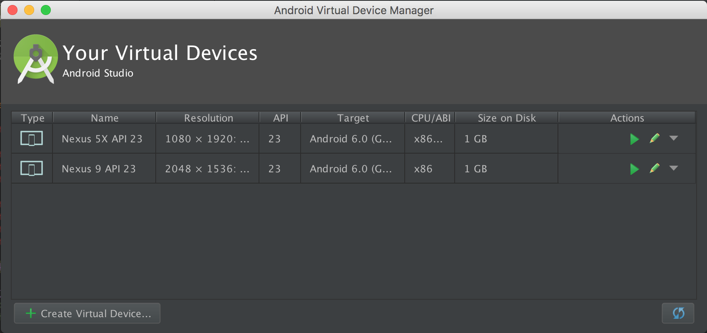

Secure Storage with Ionic 2 and SqlCipher
Hi, my name is Steve.
Competence Lead Enterprise Mobile
Ordina Belgium
@DzSteve
https://github.com/SteveDZ
Agenda
- Prerequisites: stuff you need to install
- Mini introduction to Ionic 2
- Problems we encounter when securely storing data
- Introduction Sqlite and SqlCipher and exercises
- Introduction Device Secure Storage and exercises
- Wrap-up
Prerequisites: stuff you need to install
Install Ionic
- Install node and npm
https://docs.npmjs.com/getting-started/installing-node - Install cordova and ionic:
npm install -g cordova ionic
Install Android SDK
- Download Android Studio: https://developer.android.com/studio/index.html
- Set ANDROID_HOME environment variable to your sdk folder
- Add sdk/tools and sdk/platform-tools to your PATH environment variable
Install an emulator
- Genymotion: https://www.genymotion.com/download/
OR
- Create new emulator in avd manager using the wizard provided


What is Ionic 2?
Ionic 2 is a Hybrid App development framework that builds on the foundations of cordova and Angular 2

- Cordova Creates a native application that wraps a native webview
- Your web-app is being rendered in that webview.
- Cordova enables device hardware interaction through plugins
Some basic ionic commands
Generating a new project
ionic start appname template --v2Where template is one of
- blank
- tabs
- sidemenu
Building a project
ionic build platformWhere platform is one of
- ios
- android
Serving a project
ionic serve --livereloadServes your app in the browser and enables livereload which watches your source files and refreshes your browser in case of changes.
Emulating a project
ionic emulate platformRuns your app on either the ios or android emulator.
Running a project
ionic run platformRuns your app directly on a device.
In order to run on the genymotion emulator, you also need to use the ionic run command.
Why do we need secure storage?
- To comply with security/privacy regulations
- To avoid damage claims in case of data breach
- To avoid reputation loss in case of data breach
- ...
Problems we encounter when securely storing data
Storing data is easy
- On Android
- SharedPreferences
- Internal storage (Plain files)
- SQLite database
- ...
- On iOS
- NSKeyedArchiver
- Files
- SQLite database
- ...
- It's very easy to retrieve this data!
- Most of the data stored with these mechanisms is plain readible
- Sqlite database can be opened using command line sqlite tool or sqlitebrowser
How is that even possible?
- backing up apps
- Rooting / jailbreaking device
How do you backup your app?
On Android
- Download Android backup extractor
https://github.com/nelenkov/android-backup-extractor - Using adb
adb backup - Extract .ab file
java -jar abe-all.jar unpack backup.ab backup.tar
DEMO
But this can be solved!
SQLCipher
- Drop-in replacement for sqlite
- AES256 encrypted
- Password protected
- Available on all major platforms
Cordova SQLCipher plugin
- https://github.com/litehelpers/Cordova-sqlcipher-adapter
- Install cordova plugin:
cordova plugin add cordova-sqlcipher-adapter --save
Using the plugin in your Ionic Typescript code
declare let sqlitePlugin:any;because plugins are usually available through window object
Opening a database
sqlitePlugin.openDatabase({
name: 'sensitiveData.db',
key: password,
location: 'default'
},
(db) => {
this._db = db;
resolve(this._db);
},
(error) => {
console.log('Error occured while creating database...' + error);
throw(error);
});
Selecting data
db.executeSql(DbQueries.FIND_ALL_PATIENT_QUERY, [], (rs) => {
let patients: Array = new Array();
if(rs.rows!.length! > 0) {
for(let i = 0; i <= rs.rows.length; i++) {
if (typeof rs.rows.item(i) !== 'undefined') {
patients.push(this.mapRecordToPatient(rs.rows.item(i)));
}
}
resolve(patients);
} else {
resolve([]);
}
});
- First argument: Query string
- Second argument: Query placeholder values
- Third argument: result callback
Modifying data
db.transaction((tx) => {
tx.executeSql(
DbQueries.INSERT_PATIENT,
[
patient.firstName,
patient.lastName
],
(tx, rs) => {
patient.patientId = rs.patientId;
resolve(patient);
},
(tx, err) => {
console.log('Error while inserting Patient record: ' + JSON.stringify(err));
resolve({});
}
);
});
- First argument: Query string
- Second argument: Query placeholder values
- Third argument: result callback (received both resultset and transaction object)
- Fourth argument: error callback
Everything you need to know about the sqlcipher plugin can be found:
https://github.com/litehelpers/Cordova-sqlcipher-adapter
https://github.com/litehelpers/Cordova-sqlite-storage
Why not use Ionic Native?
- key property not possible when opening database connection
- SQLite is poorly documented: https://ionicframework.com/docs/v2/native/sqlite/
EXERCISES
Cordova SecureStorage
- https://github.com/Crypho/cordova-plugin-secure-storage
- Install SecureStorage plugin:
cordova plugin add cordova-plugin-secure-storage
How does it work?
Android
- A random 256-bit key is being generated
- The AES key encrypts your value
- The AES key is encrypted with a device-generated RSA (RSA/ECB/PKCS1Padding) from the Android KeyStore.
- The combination of the encrypted AES key and value are stored in SharedPreferences
IMPORTANT: SecureStorage plugin on Android only works when device security is enabled!
IMPORTANT 2: When changing the device security, your device generated keys are being wiped....!
iOS
On iOS, the SecureStore plugin uses KeyChain
Creating SecureStorage
var ss = new cordova.plugins.SecureStorage(
() => console.log('Success'),
(error) => console.log('Error ' + error),
'my_app'
);
Getting value from SecureStorage
ss.get(
(value) => console.log('Success, got ' + value),
(error) => console.log('Error ' + error),
'mykey'
);
Setting value in SecureStorage
ss.set(
(key) => console.log('Set ' + key),
(error) => console.log('Error ' + error),
'mykey', 'myvalue'
);
EXERCISES
WRAP-UP
- Storing your data in an encrypted database can be done with SQLCipher.
- Your database key can be stored in 3 ways
- The key to your database can be stored in the Device SecureStorage (Android Keystore, iOS KeyChain)
- You can ask the user for a password each time you start up the app
- You can store your database key on the server (which requires internet access at startup time of course!)
SQLCipher
Working directly with the SQLCipher plugin causes a few problems:
- Code is very verbose, there's lot's of boilerplate
- Cannot be tested in browser because there's no sqlite there...
- Syncing data between client and server is a manual job (tedious and error-prone!!)
SecureStorage
Is a means to store data on your device in a protected manner.
- It remains safest however to not store data like credentials and passwords on your device.
- Some regulations even forbid you to (HIPAA)
Alternatives
PouchDB is definetly worth a look at!
- Can sync with CouchDb
- Nicer Api
- storage mechanism abstraction
PouchDB extensions such as Pouchdb-rel and Pouchdb-find help solve some of the difficulties that may arise from working with Pouchdb